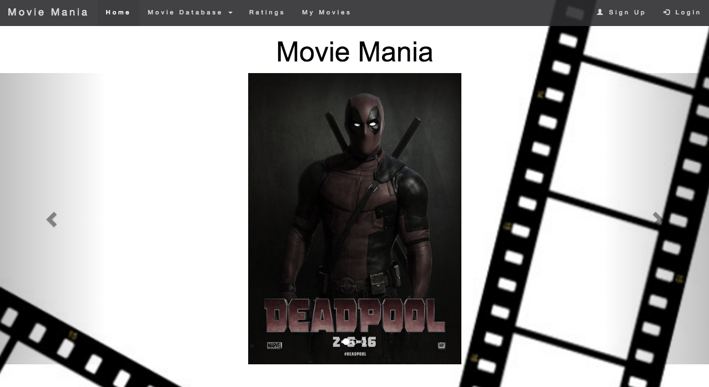
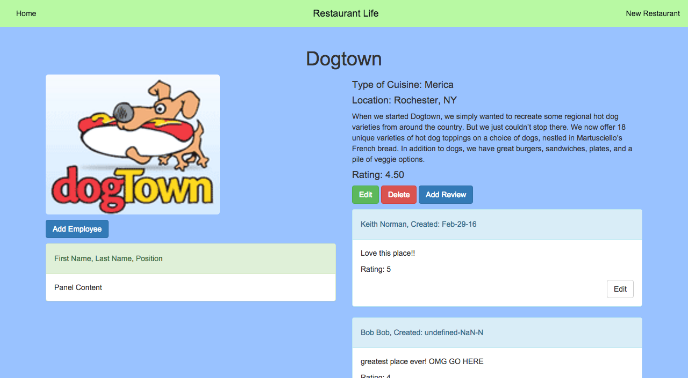
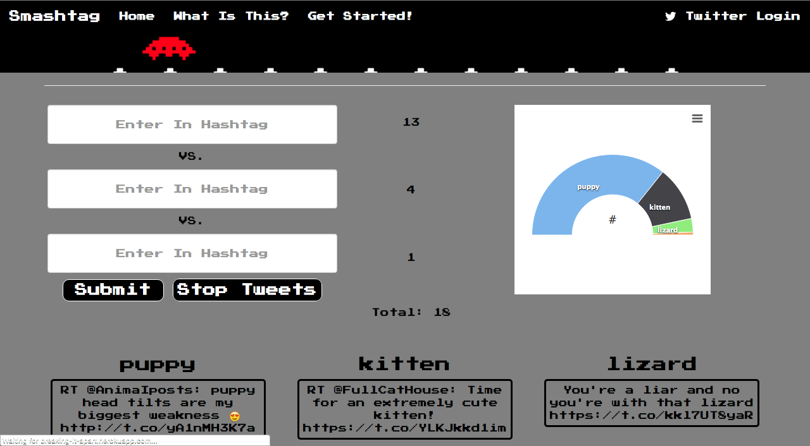

Originally from upstate New York, I moved to Colorado only about a year ago
for a new adventure in my life. I went though a lot of different trials in search
of finding what I wanted to do for a living until I came across coding.
I am the type of person who constantly wants to be challenged and to continue
learning new things. So, when I learned about
Galvanize's Full Stack Program
and became a part of the program, it was instantly a perfect fit.
I love coding and love to be creative with it. I am eager to start the
next adventure in my life as a full stack web developer!
Technical blog written about going through
the Galvanize Full Stack Program, written in MEAN stack.
Movie Mania

Website created to keep track of movies you rated
and want to see. Modified throughout the entire Galvanize Program.Currently
written in Vanilla JavaScript.
Pokemon Game
First project at Galvanize, a front-end assignment,
which is a game that mocks a Pokemon battle using the Pokemon API request.
Written in Vanilla JavaScript.
Restaurant App

Second project at Galvanize, a back-end assignment,
which is a site that collects and stores data based on restaurants.
Written in Node.js and Express.
Smashtag!!

Application that uses the Twitter API in order to graph
out the differences between hashtags streaming at the moment. Written in Node.JS and Express,
using the Twitter API, High Charts, and Twitter OAuth.
Other Skills I Have
Creative | | Marketer | | Advertiser | | Designer
Some other skills that I bring is a strong sense of
design with some experience in Photoshop as well as Final Cut Pro. I also bring a strong
marketing (both offline and online) background in which I helped design several different marketing
plans for a wide range of non-profit organizations. Please refer to my
resume for more details.
Want To Know More? Contact Me!
I love getting to know new people and talking about anything from code to video games. Please feel
free to contact me any time!